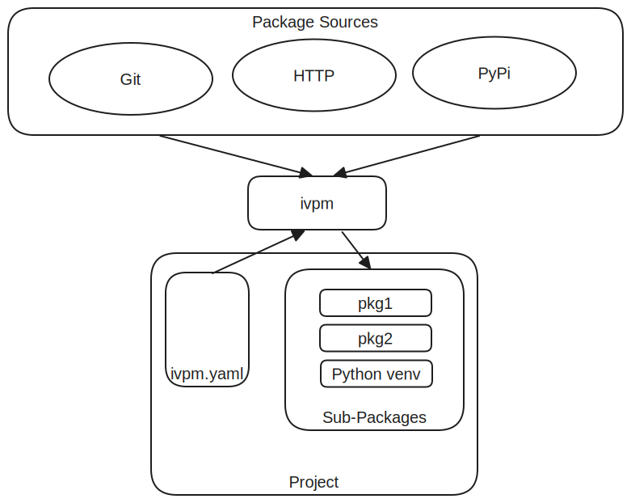

Core Concepts
Understanding IVPM’s Core Model
IVPM uses a project-local approach to package management. Unlike system-wide package managers, IVPM stores all dependencies within each project, making projects self-contained and portable.
Project Structure
A typical IVPM-enabled project has this structure:
my-project/
├── ivpm.yaml # Package configuration
├── packages/ # Dependencies directory
│ ├── python/ # Python virtual environment
│ ├── dependency-1/ # Source package (editable)
│ ├── dependency-2/ # Cached package (symlink, read-only)
│ └── ...
├── src/ # Your project source
└── ...
Key Concepts
Packages
A package is a unit of software that your project depends on. Packages can be:
Source packages: Git repositories, local directories
Binary packages: Pre-built archives, PyPI packages
Data packages: Configuration, test data, IP cores
Every package has two key attributes:
Source Type: How to fetch the package (git, pypi, http, etc.)
Package Type: What the package contains (python, raw)
Dependencies
Dependencies are the packages your project needs. IVPM automatically:
Fetches missing dependencies
Resolves sub-dependencies recursively
Orders installation based on setup requirements
Handles both development and release dependency profiles
Dependency Sets
Dependency sets are named collections of dependencies. They allow you to:
Separate development dependencies from release dependencies
Create different profiles for different build targets
Control which sub-dependencies get loaded
Common dependency set names:
default- Runtime/release dependenciesdefault-dev- Development dependencies (includes tools, test frameworks)Custom names - Any profile you define
Example:
package:
name: my-project
default-dep-set: default-dev
dep-sets:
- name: default
deps:
- name: core-lib
url: https://github.com/org/core-lib.git
- name: default-dev
deps:
- name: core-lib
url: https://github.com/org/core-lib.git
- name: pytest
src: pypi
- name: test-data
url: https://github.com/org/test-data.git
Recursive Dependency Resolution
IVPM automatically resolves dependencies recursively:
Load root project’s
ivpm.yamlSelect the active dependency set
For each dependency:
Fetch the package source
If the package has
ivpm.yaml, resolve its dependenciesContinue recursively for all sub-dependencies
Build a complete dependency graph
Install packages in the correct order
Root Project (default-dev)
↓
├─ Package A (inherits default-dev)
│ ├─ Sub-package A1
│ └─ Sub-package A2
├─ Package B (uses custom dep-set)
│ └─ Sub-package B1
└─ Package C (no sub-dependencies)
Package Types vs Source Types
Understanding the distinction between package type and source type is crucial:
Source Type: How to Fetch
The source type determines how IVPM obtains the package:
Source Type |
Description |
Example |
|---|---|---|
|
Clone from Git repository |
GitHub, GitLab |
|
Install from Python Package Index |
|
|
Download archive via HTTP/HTTPS |
|
|
Local file |
|
|
Local directory |
|
|
GitHub Release asset |
Platform-specific binaries |
Package Type: What It Contains
The package type determines how IVPM processes the package:
Package Type |
Description |
Install Behavior |
|---|---|---|
|
Python package |
Install into venv (editable or binary) |
|
Data/non-Python files |
Place in packages/ directory only |
Auto-Detection
IVPM automatically detects both types in most cases:
Source Type Detection:
URLs ending in
.git→gitURLs starting with
http://orhttps://→httpURLs starting with
file://→fileordirNo URL specified →
pypi
Package Type Detection:
Has
setup.py,setup.cfg, orpyproject.toml→pythonExplicitly
src: pypi→pythonOtherwise →
raw
You can explicitly specify types when auto-detection isn’t sufficient:
deps:
- name: my-package
url: https://example.com/pkg.tar.gz
src: http # Explicitly specify source type
type: python # Explicitly specify package type
Project-Local Management
All IVPM operations are project-local:
Dependencies Directory
Dependencies are stored in packages/ (configurable via deps-dir):
packages/
├── python/ # Virtual environment
│ ├── bin/
│ ├── lib/
│ └── ...
├── package-a/ # Source dependency
├── package-b/ # Source dependency
└── package-c/ # Link to cache
Python Virtual Environment
IVPM creates a project-local Python virtual environment:
packages/python/
├── bin/
│ ├── python # Project-specific Python
│ └── pip
└── lib/
└── python3.x/
└── site-packages/
Benefits:
No system-wide state
Each project is isolated
Easy to delete and recreate
Portable across machines
Multiple projects can coexist
Working with IVPM
Typical Workflow
Clone a project:
ivpm clone https://github.com/org/project.git
Update dependencies (done automatically by clone):
ivpm update
Activate environment:
ivpm activate # Or for one command: ivpm activate -c "pytest"
Work on code, make changes
Check status of Git dependencies:
ivpm status
Sync Git dependencies with upstream:
ivpm sync
Dependency Set Selection
Choose which dependency set to use:
Via command line:
# Use development dependencies
ivpm update -d default-dev
# Use release dependencies
ivpm update -d default
Via ivpm.yaml:
package:
name: my-project
default-dep-set: default-dev # Used if no -d specified
Via sub-package override:
deps:
- name: sub-package
url: https://github.com/org/sub.git
dep-set: production # This package uses 'production' dep-set
Next Steps
Now that you understand the core concepts:
Learn about Dependency Sets in detail
Understand Package Types & Sources and all available options
Explore Caching for faster updates
See Python Package Management for Python-specific features